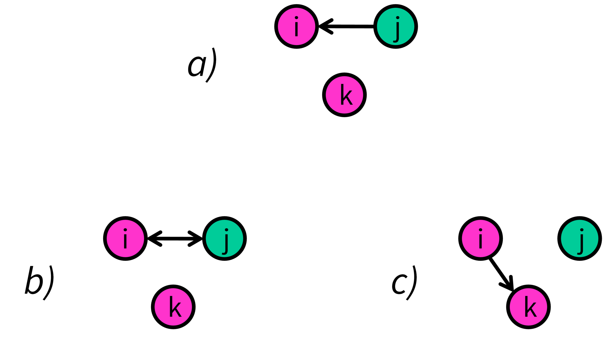
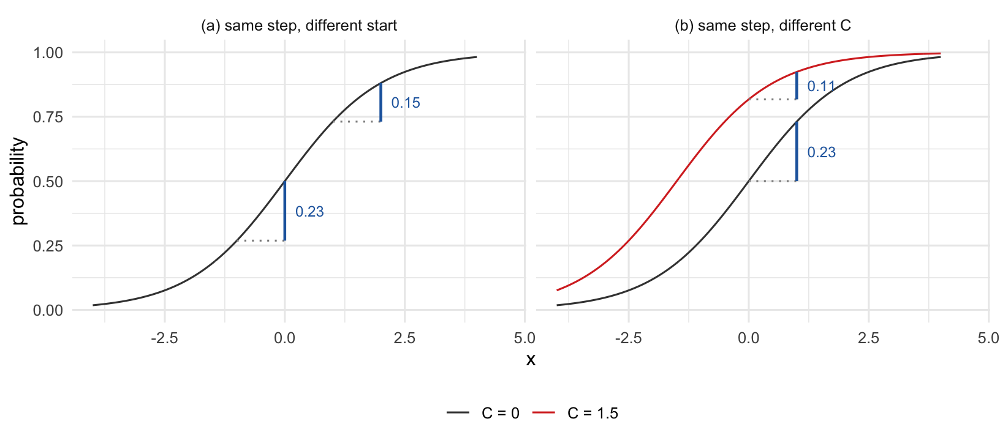

| effect | estimate | SE |
|---|---|---|
| rate (period 1) | 8.169 | 1.387 |
| outdegree (density) | -2.167 | 0.544 |
| reciprocity | 2.052 | 1.181 |
| transitive triplets | 0.780 | 0.244 |
| same primary school | 0.641 | 0.266 |
| male alter | -0.700 | 0.325 |
| male ego | -0.394 | 0.306 |
| both male | 1.733 | 0.484 |
| reciprocity × transitivity | -0.749 | 0.544 |
1 What a coefficient tells you
Why a SAOM parameter is not an effect size
1.1 What we want from a model result
Interpreting a fitted model should let us say something fair and meaningful about it — going beyond the direction and significance of a parameter, and relating the result back to descriptives of the data that inform our understanding.
In an ordinary linear model this is nearly automatic. A coefficient is a change in the outcome per unit of the predictor, in the outcome’s own units, and it means the same thing regardless of the values of all other observations.
A SAOM coefficient is a perfectly well-defined quantity too: a difference in log-odds within a choice set, on the scale of the objective function. What changes is that it no longer doubles as an answer to “how much”, because four features stand between it and the outcome scale:
- A non-linear link. The same coefficient implies different changes in the outcome depending on the baseline.
- Interactions. Ceteris paribus becomes hard to state given the complex hierarchies between effects, and harder again when predictors are collinear.
- Dependence between observations and over time. Observations are not independent units.
- A latent decision sequence. What the model describes — who considers changing which tie, and when — is never observed.
The fourth has no counterpart in cross-sectional network models, and it is the reason there will turn out to be more than one average marginal effect rather than a single one. Taken together these aspects make it harder to link back the results to any descriptives of the data you have made. It’s also makes it difficult to interpret their actual impact on decisions and the observed data.
It is worth being clear that none of these complications are new: they are already in the model, and going beyond constant log-odds coefficients is what brings them to light. Effect-size questions are what make them unavoidable — to state an effect size you have to say what is being conditioned on, what is being averaged over, and on which scale. The model has always worked this way; asking it for effect sizes is what makes that structure visible.
1.2 What a coefficient does answer
That list is what the coefficient scale will not do on its own. It is worth being equally concrete about what it will. Below is one school class — 12b, the first of the three used in Chapter 4 — fitted with reciprocity, transitivity, a primary-school indicator and gender.
Each estimate is a difference in satisfaction between two networks that differ by one unit of the corresponding statistic. Comparing two mechanisms is therefore a subtraction, and questions that sound quantitative can be put directly.
Take the situation in Figure 1.1. A boy \(i\) has been nominated by \(j\), a girl, and is not tied to \(k\), another boy. Two of the alternatives open to \(i\) at his next opportunity are to reciprocate \(j\)’s nomination, or to nominate \(k\). Which does the model say he prefers?

Both are tie creations, and in a network this bare neither closes a two-path, so the outdegree term, ego’s own gender and the structural terms enter both alternatives alike. Take \(j\) and \(k\) to be alike on primary school too, and what is left is reciprocity on one side against the two alter-gender terms on the other:
| alternative | terms that differ | total |
|---|---|---|
| (b) reciprocate \(j\) | reciprocity \(+2.05\) | \(+2.05\) |
| (c) nominate \(k\) | male alter \(-0.70\), both male \(+1.73\) | \(+1.03\) |
The model puts reciprocating about one unit ahead. Nothing in that reasoning is illegitimate: on the satisfaction scale, coefficients compare.
What the table cannot tell you is whether a gap of about one unit is distinguishable from zero. It gives a standard error for each coefficient, but the quantity compared here combines three of them, and the standard error of a combination depends on how those three estimators covary — which a column of standard errors does not contain. That is what test_parameter() is for: it tests a linear combination of parameters using the full covariance matrix. Here it would matter, since reciprocity is estimated loosely in a class this size.
So coefficients do answer comparative questions about satisfaction, and answer them properly. What they will not tell you is how much more likely \(i\) actually is to reciprocate — a question on a different scale, and the one the rest of this material is about.
1.3 Already visible in the simplest case
Take a logistic regression with one predictor, a coefficient of 1, and an intercept \(C\). Only a null model would be simpler in this family, and already the coefficient does not translate into a single probability change.

On the left, a one-unit increase in \(x\) raises the probability by about 0.23 near the middle of the curve and about 0.15 higher up. Same coefficient, different effect. On the right, the same one-unit increase evaluated under two intercepts again gives two different answers.
Odds ratios sit in a similar position. An odds ratio is constant — that is its appeal — but constant on the odds scale and multiplicative, so it leaves open how far the probability moves. Which matters when the claim being made is about probabilities or how it affects the observed outcome.
1.4 The same question about comparisons
Comparing coefficients raises the issue again. Three comparisons come up often:
| comparison | question | example |
|---|---|---|
| one data set, one model | which mechanism matters more? | reciprocity vs closure |
| one data set, several models | does the effect change when we add a control? | mediation, moderation |
| several data sets, one model | how much does the effect vary across settings? | meta-analysis |
The first row runs into something elementary before any of that. What enters the objective function is the product \(\beta_k s_{ki}\), so how large a coefficient comes out is tied to the range its statistic takes. Reciprocity is an indicator moving between 0 and 1; a count of transitive triplets can move by ten. Reading the two coefficients against each other as a statement about which mechanism matters more compares steps of one on scales whose steps are not the same size. This is the difficulty that standardised coefficients handle in linear regression, and for which non-linear models have no clean equivalent — though partial remedies exist, and Snijders and Steglich (2026) discusses semi-standardised effects for the SAOM.
All three rows then run into a second problem. Each is relatively straightforward on the coefficient scale only if the scale itself is the same on both sides of the comparison, and in a non-linear model it need not be: a coefficient is identified relative to how much variation the model leaves unexplained. Two familiar habits also do not carry over — there is no constant residual variance, and no useful notion of explained variance.
The mechanism is worth stating precisely, because its direction is easy to lose. Leaving a predictor out increases the unexplained variation. The scale is implicitly fixed, so the remaining coefficients contract to absorb it — meaning coefficients are systematically smaller in models with fewer predictors, and grow as predictors are added. This is the same rescaling long discussed for binary logistic regression (Mood 2010).
The SAOM has a second absorber with no binary-logit counterpart: the rate parameter can inflate, so simulated actors take more ministeps to cover the same observed change. In one simulation experiment, dropping an orthogonal covariate attenuated the structural coefficients by roughly 23% while inflating the rate parameter by roughly 43%.
The third row has an established response — meta-analysis, with a long tradition of standardised cross-study effect sizes and, for SAOMs, a worked-out random-effects treatment: see section 12.3 of the RSiena manual (Ripley et al. 2026), and the two-stage population model in Snijders and Steglich (2026). Chapter 4 puts it to use. Two things from above bear on it, and they pull in opposite directions.
One is an artefact. Specifications across studies are rarely identical, and when the results being synthesised are other people’s you take the specifications you are given; since what a model leaves unexplained is folded into its coefficients, the numbers entering a pool need not sit on a common scale.
The other is not really a problem, though it is easy to mistake for one. Settings and actors genuinely differ in how predictable behaviour is, and where they do, the same underlying tendency really does translate into different outcome probabilities. An effect size that comes out differently there is reporting something true, not failing to control for something. Chapter 6 says what a comparison of this kind can and cannot claim.
1.5 Where this is going
What the rest of the workshop material offers is a second quantity to report alongside the coefficient, on the probability scale: how much does a mechanism change the probability that a tie is created, or maintained? The coefficient stays what it is and keeps its own uses; this is an additional estimand, aimed at readers who want to reason on the probability scale, or to set model results next to the descriptive comparisons one can compute from two waves directly — with the limits of those comparisons stated as they arise.
Unlike a coefficient, such a quantity has to be defined rather than read off: what is held fixed, what is varied, and over which situations it is averaged. That is the work of Chapter 2.
One expectation to set now. Moving to the probability scale gives a common unit and a directly interpretable quantity. It does not by itself give comparability across scales, and Chapter 6 will expand on this.